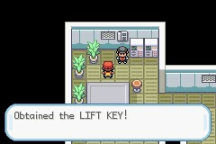
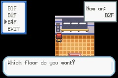
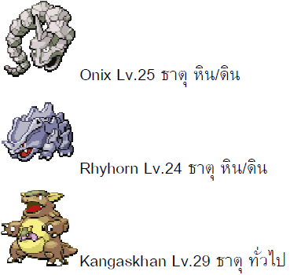
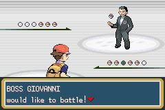

บทที่ 12 / 29
ฐานลับทีมร็อคเก็ต<Rocket Hideout>
❖
ที่นี่เป็นฐานลับของทีมร๊อคเก็ต องค์การชั่วร้าย ที่นี่จึงมีสมุนร๊อคเก็ตให้สู้เก็บเลเวลเยอะ (แถมยังมีไอเท็มเยอะด้วย ส่วนใหญ่จะอยู่ที่ชั้น2 แต่ต้องเดินผ่านพื้นลูกศรน่าเวียนหัวเล็กน้อย)ให้เราลงไปชั้นล่างสุด(ลงบันไดอีก3ชั้น) และเดินล่างขวา(B4F)ไปสู้กับคนซ้ายบนสุดให้ชนะ แล้วเราจะได้ กุญแจลิฟต์<Lift Key>มา


พอได้มาแล้วให้เราลงไปชั้นรองล่างสุด นับชั้นที่มีสล๊อตให้เล่นด้วย แล้วขึ้นลิฟท์มาชั้นบนสุด สู้กับคนเฝ้าประตู2คน ประตูจะเปิดออก แล้วเข้าไปหาหัวหน้าทีมร็อคเก็ต ชื่อซากากิ<Giovanni> ใช้โปเกมอนดังนี้


พอสู้เสร็จเขาจะหนี แล้วทิ้งSilph Scope ซึ่งทำให้เรามองเห็นโปเกมอนที่มองไม่เห็นได้เอาไว้ ให้เราเก็บมา แล้วให้เราย้อนกลับไปที่เมืองชิออนทาวน์ เข้าโปเกมอนทาวเวอร์ (ตึกสูงๆ)